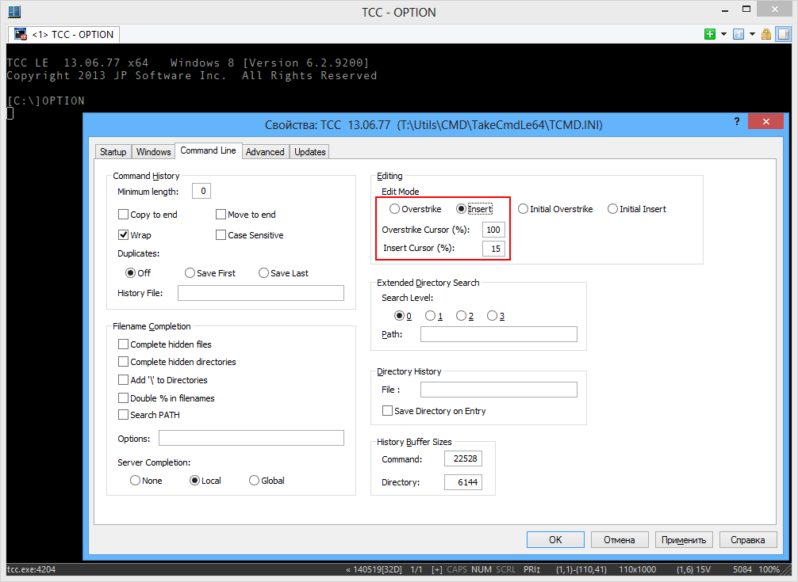

From time to time any user complains that ConEmu starts tcc (tcc/le) prompt in ‘Overwrite’ mode. But that is not a ConEmu responsibility (check it with cmd.exe as a shell). You need to configure your tcc properly.
Just run from yours tcc prompt:
OPTION
And choose desired mode on the ‘Command Line’ tab. Do not forget to press ‘OK’ button ;)

Actually, it will update your TCMD.INI file (located in "%USERPROFILE%\AppData\Local\JPSoft" or near to tcc.exe).
[4NT] CursorIns=15 CursorOver=100 EditMode=Insert ;; And so on...
Alternatively, you may use the following command in your tcc prompt. But note that it will not update yours TCC.INI configuration file.
SETDOS /M1 /S100:15